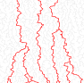
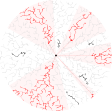

Some images of my research

On the left is a simulation of the First Passage Percolation with Recovery process
at time \(t=13\) with recovery rate \(\gamma=\frac{1}{2}\)
on a Galton Waston tree with branching distribution \(\mathrm{Bin}(2,\frac{4}{5})\).
The black edges show the infected cluster reached by the standard first-passage percolation process (with rate \(1\))
spreading from the root by time \(t\). Red vertices mark individuals whose recovery clocks (running at rate \(\gamma\))
were triggered upon infection by time \(t\), but had not yet rung.
In [A1], we introduce and analyze this
original model, where a recovery mechanism runs independently on top of a first-passage percolation process,
deriving asymptotics for the size of red components as \(t\to\infty\).

The Directed Spanning Forest (DSF) of dimension \(d\geq 2\) is a random geometric graph whose vertex set is given by a
homogeneous Poisson point process \(\mathcal N\) in \(\mathbb R^d\) and whose edges
consist of all pairs \((x, y)\in\mathcal N^2\) such that \(y\) is the closest point
to \(x\) in \(\mathcal N\) with a strictly larger \(e_d\) coordinate.
The DSF has a natural forest structure: it is a collection of unrooted directed trees.
A natural question is whether the DSF forms a single tree,
meaning that all directed paths eventually coalesce, or whether it consists of several disjoint trees.
In [P1], we address this question in arbitrary dimension
obtaining that the DSF is almost surely a tree when \(d \leq 3\),
and that it consists of infinitely many disjoint trees when \(d \geq 4\).
On the right is a simulation of the 2-dimensional DSF in a finite box.
In grey are represented its edges, while in red are highlighted
the infinite paths starting from some vertices located below the bottom of the displayed area.

The Radial Spanning Tree (RST) of dimension \(d\geq 2\) is a random geometric graph constructed on a homogeneous
Poisson point process \(\mathcal N\) in \(\mathbb R^d\) augmented by the origin,
with edges connecting each \(x\in\mathcal N\) to the nearest point \(y\in\mathcal N\cup\{0\}\)
that lies closer to 0 than \(x\), with respect to the Euclidean distance.
By construction, it forms almost surely a tree rooted at 0. A natural question is whether infinite branches exists and are asymptotically directed.
In [P2], we establish that
the RST is almost surely straight in any dimension, meaning that the angular spread of its sub-trees vanishes as their sub-roots
goes to infinity. This notion of straightness, introduced by Howard and Newman in 2001, allow to obtain that with probability one,
all infinite branches are asymptotically directed, every possibility is attained, and directions reached
by multiple infinite branches form a dense subset of \(\mathbb S^{d-1}\).
On the left is a simulation of the 2-dimentional RST in a finite ball around the origin. Edges appear in light gray, with thickness decreasing with length. In red are highlighted some sub-trees exiting the displayed
area, contained within translucent red cones pointing toward their sub-roots, with arbitrarily chosen
apertures that appear to decrease to 0 with the distance to the origin, suggesting straightness.
In black are highlighted some finite sub-trees remaining within the area, illustrating that RST
sub-trees are not necessarily infinite.

Consider a random forest (i.e., an acyclic graph) embedded the plane. A natural problem is to understand
its topological structure by classifying its connected components of the forest (namely, the trees)
according to their number of topological ends, that is, the number of distinct infinite branch they possess.
More precisely, we may study, for each (possibly infinite) \(k\geq0\), the number \(N_k\) of trees in the forest
that admits exactly \(k\) topological ends. In [P3], we establish a complete classification
result under mild assumptions (specifically non-crossing property, stationarity, and finite edge intensity)
which describes exactly the possibilities for the sequence \((N_k)_{k\geq0}\).
To the right is a simulation of the Uniform Spanning Forest (USF) of \(\mathbb Z^2\),
a random graph obtained as the weak limit of uniform spanning tree in boxes of the \(\mathbb Z^2\)
lattice whose side lengths tend to infinity. This object falls within the scope of our result and is well-understood.
In particular, it is know that the USF of \(\mathbb Z^2\) is almost surely a single one-ended tree,
which allow one to orient its edge toward the unique topological end. In the picture,
the edge brightness is modulated by the distance from the furthest descendant leaves,
which helps visualize the fractal-like structure of the object.